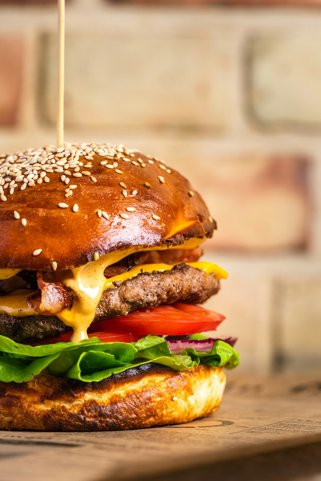

The classic cheeseburger is a global culinary icon, loved for its bold flavors and deeply satisfying combination of textures.
At its heart is a juicy, perfectly seared beef patty topped with a slice of rich, melted cheese that drapes over the hot meat.
Nestled inside a soft, lightly toasted brioche bun, every bite offers a delicious contrast between the savory grilled beef and the creamy cheese.
What elevates a great cheeseburger is the harmony between the warm patty and its fresh toppings.
Crisp lettuce, ripe tomato slices, tangy pickles, and sweet caramelized onions add bright layers of crunch and freshness.
Finished with a drizzle of signature burger sauce, mustard, or ketchup, it achieves the perfect balance of savory, sweet, and tangy flavors.
To make this delicious cheeseburger, you will need a toasted sesame seed bun, a juicy grilled beef patty, melted Cheddar cheese, and crispy bacon slices.
For the fresh toppings, prepare crisp green lettuce, ripe tomato slices, and sliced red onions. Finish it off with a generous drizzle of creamy burger sauce.
Start by shaping the ground beef into a patty and seasoned with salt and pepper, then grill it on high heat until fully cooked.
Near the end of cooking, place the cheese slice on top to melt, and crisp the bacon in the same pan.
Lightly toast the sesame bun until golden.
To assemble, spread burger sauce on the bottom bun, layer with lettuce, tomato slices, and red onions, then add the cheesy beef patty and bacon.
Top with more sauce and the top bun, and secure with a wooden skewer.